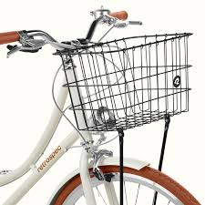
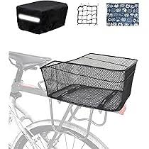
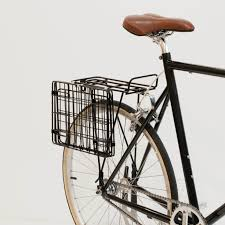
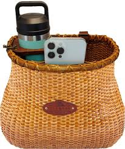
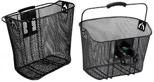

Basket review
07 MÄRTS 2025

07 MÄRTS 2025
Best Overall: This sturdy and spacious basket is made from weatherproof steel with a steel mesh bottom, ensuring your items stay safe and secure. It's perfect for errands, grocery store hauls, or a quick commute across town. The basket is detachable and can be used as a standalone basket.
Best All-Weather: This insulated thermal bike cooler is water-resistant and includes a phone mount. It has an insulation layer that keeps your lunch warm or your juice cold, making it very functional for keeping foods and drinks. The reflective straps make you highly visible during night rides.
Best Value for Money: This folding rear basket is perfect for those who need extra storage space but want the convenience of a foldable design. It's made from durable materials and can be easily attached to the rear of your bike. When not in use, it folds flat for easy storage.
Best in Design: This eco-friendly basket is made from natural materials and offers a stylish and functional design. It's perfect for carrying groceries, picnic supplies, or other essentials. The basket is easy to install and adds a touch of elegance to your bike.
Best in Functionality: This sturdy wire basket is easy to install and remove, making it a versatile option for any cyclist. It's perfect for carrying groceries, books, or other items, and its durable construction ensures it will last for years.
